Report on webpage

Shreejan Regmi
CSY-1018: WEB DEVELOPMENT
UoN ID: 18417132
Introduction
After analyzing few CV and resume websites on the internet, it is quite reasonable to feel some amount of discouragement as majority of them run javascript, bootstrap, PHP etc. But with the knowledge gained through 12 weeks of classes in HTML and CSS, it was possible to create an attractive and neat resume wabsite. The assessment handed to us was the 'Web Development CV' where it was required to create six webpages to present information about ourselves, including our key experience and skills on computing field.
Here, I refer myself to as 'the developer'
Interface Design Planning
Design planning section of the project consisted the steps taken to formulate the final design of the webiste. These included: inspirations from the internet and group planning of design.
Web search
It was a great idea to surf the web to get design ideas for the creation of a well functioning and reliable website for the CV. In this process, few websites were stumbled upon where the presentation of the information on the websites was liked and the overall content provided was clearly understood. To name a few:
-
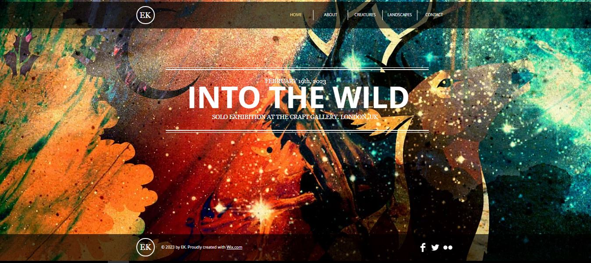
Template(Wix.com)

Devon Stank
Reasons for choice
The above mentioned two websites were found very intriguing. Talking about the first, the template from wix.com, a popular site-designing website; the header and footer especially caught the eyes. The partially transparent black colored background and footer matched the preety flamboyant and colorful background. This part is included in the developer's (myself) site. Similarly, the transition between pages when clicked on navigation was smooth and appeared from the right of the screen.
The second example site, Devon Stank's profile had professional feels to it. Long, scrollable pages with variying eye-friendly color combinations with abundant content was what caught the eyes of the developer in this page. The hover effect on the navigation dims the links not hovered upon. The 'About' page included photo gallery of Devon's instagram feed and his personal life. Few videos were also present in between sections of the pages and included links to other pages. Javascript, bootstrap was used intensively in both of the websites.
Group design plan
After analyzing a few, and skimming through other websites present on the internet, a small idea on what the developer would like to include in the final website was being clearer. To speed up this process and to acquire a few more ideas, the developer acquainted himself with his colleagues.
Mr. Aayush Moktan-18406502
Mr. Hira Bahadur Rana Kauchha- 18413703
Working in a group of three, they shared what they knew best; respecting and evaluating each other's ideas and helping each other to build their own view of the websites. They also had websites of their choice as reference. Mr. Aayush kept two templates from wix.com as his reference and Mr. Hira Bahadur chose a template from Wix.com and protfolio of Jony Rathutr(www.quomodosoft.com) as design inspiration. Mr.Hira had the idea of creating a website for the assignment which had dark colored background with only few animations. Whereas, Mr. Aayush wanted to include animations in every webpage in the section part and wanted to have bright background image. Whereby, the developer wanted to have neat and not-so-complex website. Even though all three of them had different design ideas but the collaboration was effective.
The sketches of the developers part during group discussion are presented below:
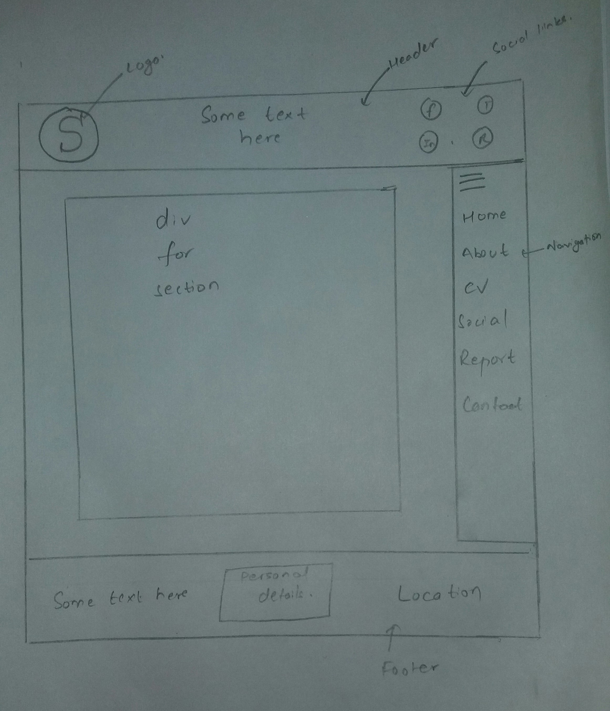
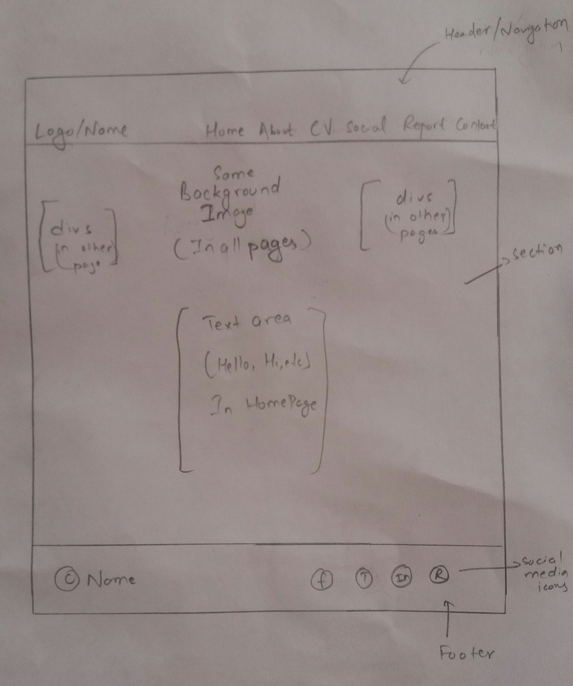
Since they are both sketches made during group discussion they are not the final wireframe of the designed website. They are merely the prototype or rough sketches of how the websites would look like. As there are two images, the developer thought of two designs mainly distinguished by the position of navigation bar. In the first sketch, the header itself consists of a horizontal navigation and in the second sketch, the navigation is vertical and present at the left site of the page. The final poject,however, is developed from the first one.
Design
Sketches
Homepage Sketch

After viewing many attractive designs of website on the internet, the thought was fixed that simple but efficient homepage is to be made. There would be a navigation bar at the top with the name on the left part. Hover effects would be added on each link. There would be gentle background with eye-friendly color. In the section part, there would be text with a button. This would have fade-in animation same to all other pages. The footer would be at the bottom of each page with social media icons. The icons would rotate about 360 degrees and add colors on hovering.
About Sketch

The navigation part woulde be the same as the homepage. In the section part, there would be a photo of the developer with rounded edges which changed to circular form when hovered. Right next to the photo would be description about the developer. Footer will also be same as homepage.
CV Sketch

CV page would consist of three vetical columnar sections which contains a table of qualifications, skills and experience of the developer. Navigation and footer would be the same.
Social Sketch
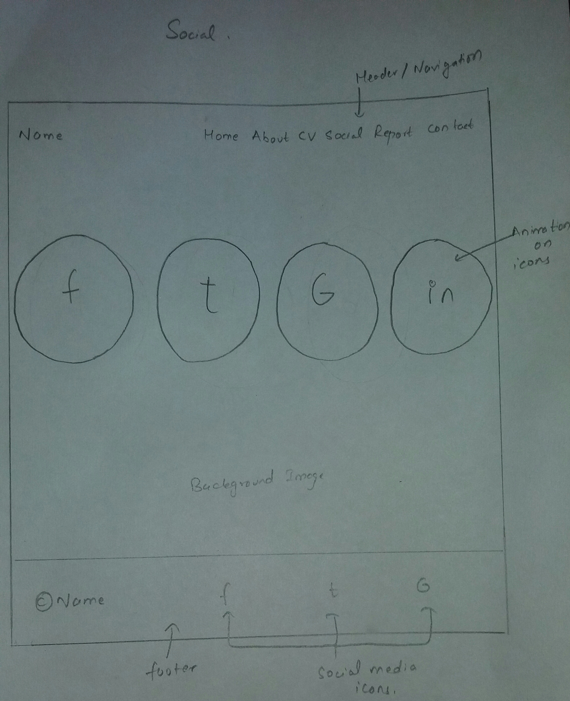The social section would contain links to the social sites of the developer. Large icons with hover and animation effect would be used. Navigation and footer would be the same
Contact Sketch

On this page, contact information would be included. This page would be divided into two vertical sections. Left section would contain contact form while right section would contain map, embedded from google maps, of the hometown of the developer. Navigation and footer would be the same
Wireframes
Homepage
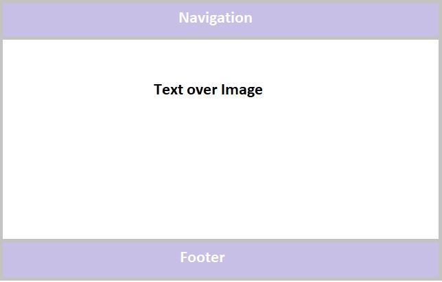About
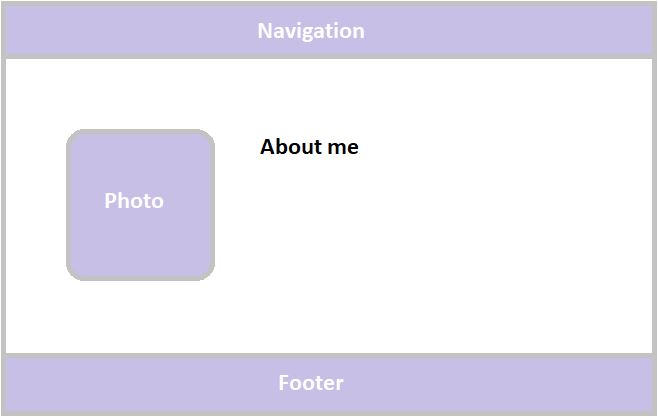CV
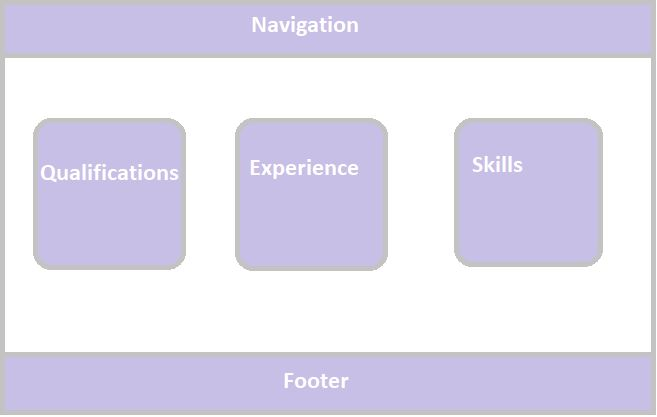Social
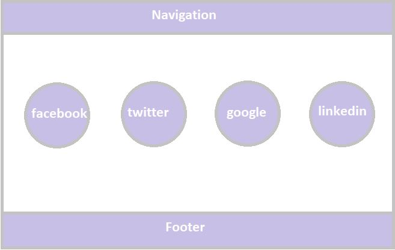Contact
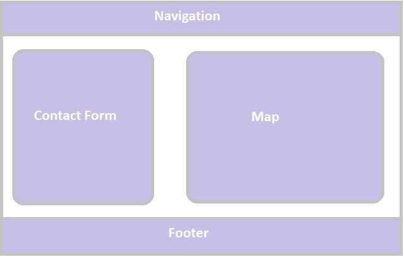User Interface Design
This is the final design of the website existing after all the coding work. It was made with only HTML and CSS. Many changes were made during the designing process in accordance to the suggestions from colleagues and reviewing resources online. It was tried best to make the website as simple and effecient as possible but also featuring dynamic qualities. So it is attractive in its own kind.
Screens of webpages
Homepage

The above displayed screenshot is of landing page or homepage. The homepage consists of navigation at the top with logo/name on the topmost left part. Users are sent to respective page according to the link they click. Clicking on the name redirects the user back to the homepage. Hover effect turns the navigation links to green in color and the red shadow is added to the logo part. Similarly, the 'here' button also changes its background color to green when hovered. The footer part consists of social media links and copyright text with partially transparent background color, which is present in all pages. The facebook, twitter and google icon show their respective trademark color when hovered upon.
About

The above displayed page is the 'About me' page. The header is the same as the homepage. When the user presses on the name at the header he is redirected back to the homepage. The section part is wrapped in partially transparent black color. In the left side of the section, there is a photo with border radius and when hovered upon, the photo becomes fully rounded. Right next to it is the about me header and some information about the developer is presented. The footer is also same as the homepage.
CV

In the CV page, there is navigation bar consists of logo/name on the topmost left part. Users are sent to respective page according to the link they click. Clicking on the name redirects the user back to the homepage. The section is divided into three flex columns: the first one contains a table with the qualifications of the developer. Second column contains experience of the developer in the web field. Third column contains his skills in web designing and other areas. All three columns are wrapped in partially transparent background color black. Footer is same as other page, containing copyright text and social media links.
Social
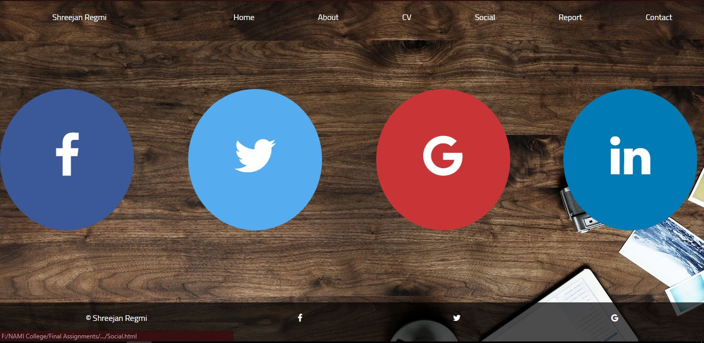The social page includes the same navigation as other pages. The section part contains four social media icons: facebook, twitter, google and linkedin. They are placed in a row using flex. Rotating animation effect is added on the icons. Their respective trademark colors are also used as their background. Border radius is added to make the icons rounded. When hovered upon,the background color of the icons change and become darker. Footer part contains social links and copyright text.
Contact

CV page,also containing the same design of header and footer, contains a contact form and a map placed right next to each other using flex. Contact form is for the users to get in touch with the developer so that they can give feedbacks or talk in general. Contact form has been validated so that users cannot leave any field blank before submitting. The map shows the hometown of the developer. It is embedded from google map.
Responsive Web Design
Homepage
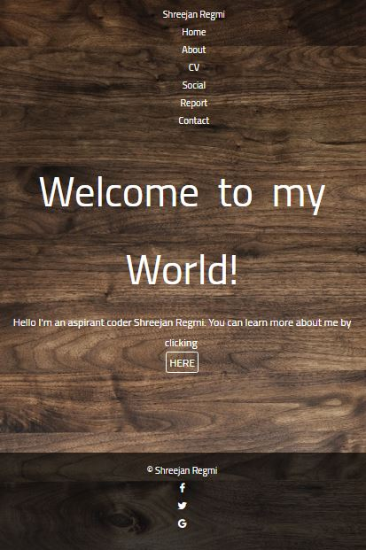In the responsive view of the webpage, the navigation bar which was originally in a row is now displayed in columnar form maintaining its order. There is not much change seen in the section part but in the footer, the social media icons and the copyright text are also aligned vertically because of the flex column property.
About
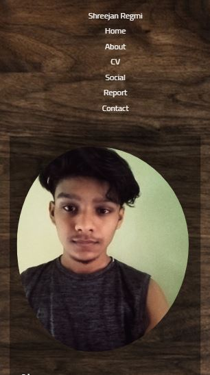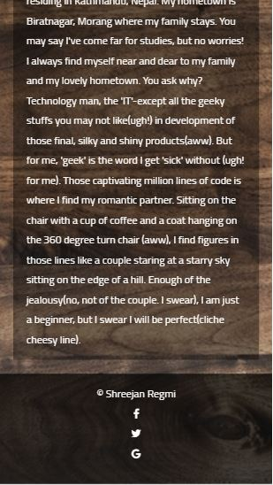
The above two images show the mobile responsive view of the about page. It is shown in two pictures because of inability to take a long screenshot of the site. So, as seen in the image, the header is aligned vertically. Also, the section part, where a photo and text part was presented horizontally is now on vetical where the image is on top of the text. Footer is also aligned vertically.
CV
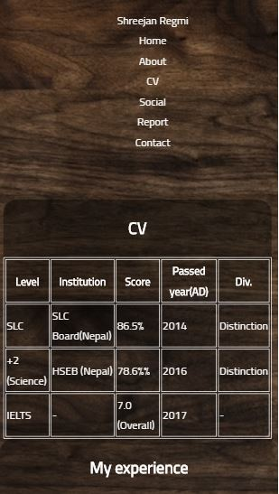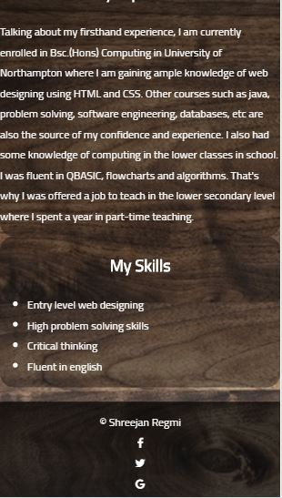
For the responsive view of the CV, the navigation and footer both are aligned vetically. Similarly, the three flex columns in the original design: the table, experience and the skills part are also displayed in vertical form in the same order.
Social
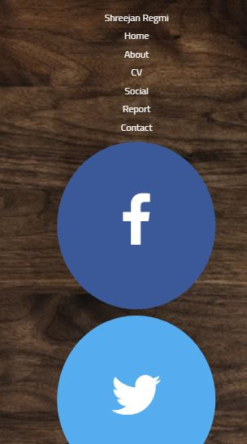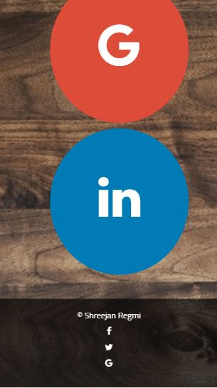
Responsive design of social page contains the same kind of footer and navigation: displayed vertically. The change in the responsive social page in comparison to original page lies in its section. The social icons appeared in row form in the desktop view whereas in the responsive design, the links appear in column on top of each other.
Contact
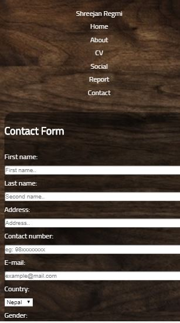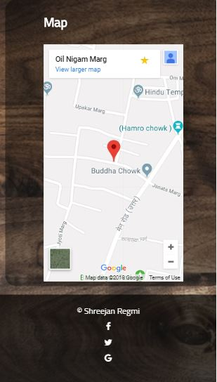
Similar to the other pages, the header and footer are aligned in vertical form. The contact form and map are also displayed vertically.
Code Validation
HTML Validation
During HTML validation using W3C validator, few errors and warnings were shown. They were because of: not including html language attribute, missing closing tag of 'a' element, missing semi-colon after using copyright symbol code and few other simple errors. These were corrected and the results are shown below:
Homepage

About

CV

Social
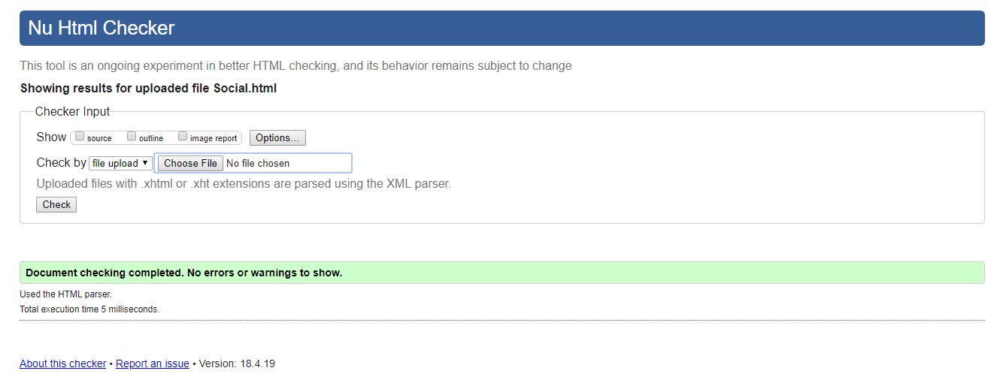Contact

CSS Validation
In CSS validation, few errors and warnings concerning mainly missing header tags in section, using rgb() instead of rgba() and using two codes having negative padding. These were corrected and the result is shown below:

Written Reflection
Talking about the experience I had in learning web development in the first term, it was intriguing and somewhat challenging as well. Even though I had already learnt about the basics of HTML in secondary level, at the beginning of the first term in bachelors, I was quite amazed to see the module contents. I used to hear that CSS is quite tough in general and material design is difficult to understand. I did not take that message as a cause of discouragement but I was eager to see what was packed in it and was in a hurry to open and see the contents. Then during the first few weeks the classes went smoothly. I was able to grasp the basic concepts quite clearly. But it was after the introduction of flex property, I was quite confused about the difference between the uses of flex and float property. Where to use float and where to use flex was very bothering me. But, understanding the flex box and flex container helped me in realizing my mistakes. Similarly, I found github quite vague to understand. The whole concept of push and commit was new to me. But with ongoing classes and practice at home, it became a lot easier for me to understand the newer concepts discussed at classes. I used to research about any idea that I was not clear about. And currently, I am trying to understand every features of CSS3 in depth. It may take a lot of time but it is possible. All I am able to do in this project is because of our module teacher Mr. Ganesh Khatri and I hope that I will be able to florish my skills even more in the second term.
Conclusion
In final words, every effort was given to make the website as reliable and effective as possible. The major part in the construction of an attractive website is the design part. Coding is based on design part too. A simple yet effective solution to the assessment project was chosen and worked upon intensively to deliver the final product.
Known from research of various sites on the internet, the use of javascript and bootstrap would have made the website even more dynamic and user-friendly with variety of animation effects.